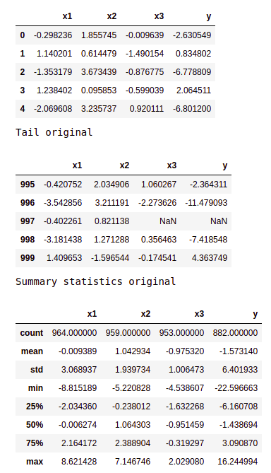
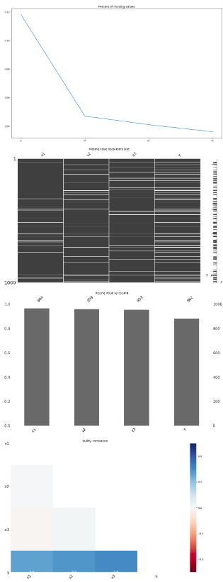
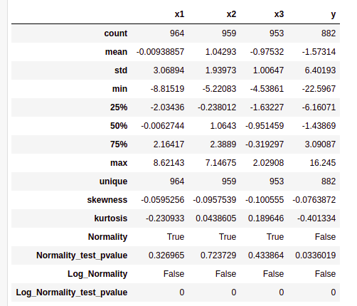
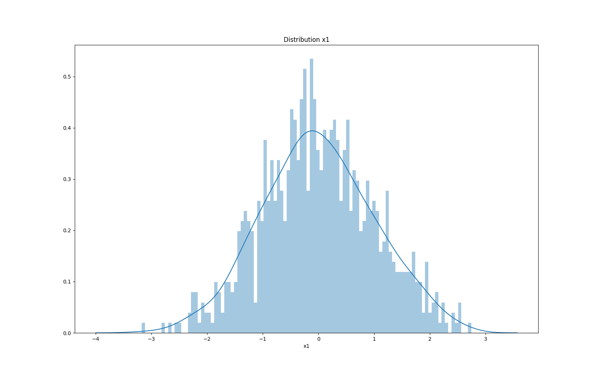
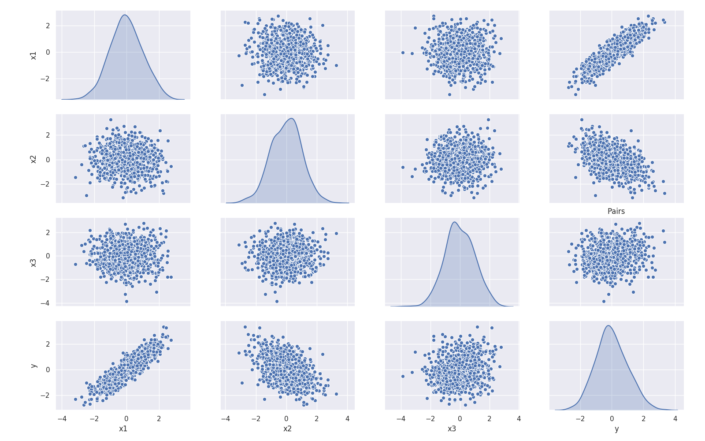
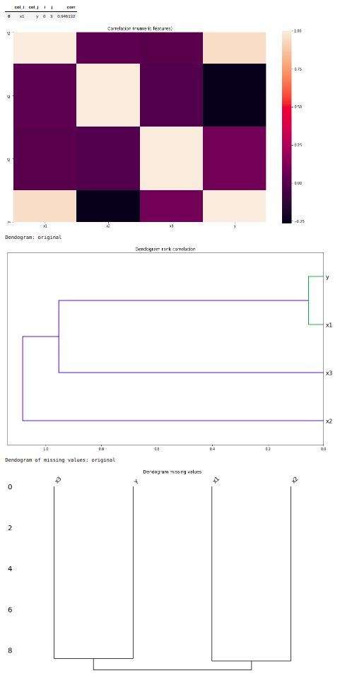

Explore (df)
These steps implement data exploration when dataset is a DataFrame (i.e. dataset_type: 'df').
The exploration step is run twice:
- Original (raw) dataset
- Pre-processed dataset
With both analysis you can check whether the pre-processing steps had the desired results, such as properly imputing missing values, or normalizing the data
All missing values are imputed on the pre-processed dataset, so any analysis related to missing values is only performed on the original (raw) dataset.
Summary statistics
- Show DataFrame head and tail (firs and last lines)
- Summary statistics: count, mean, std, min, 25%, 50%, 75%, max

Missing data analysis
- Number of missing values
- Plot: Percent of missing values
- Chart: DataFrame missingness
- Plot: Missing by column
- HeatMap: Missingness correlation

Field description
- Field statistics
- Skewness, Kurtosis
- Normality test and p-value
- Log-Normality test and p-value
- Histogram and kernel density estimate
 
Pair plots: scatter plot of variables pairs (up to plot_pairs_max, default 20)

Correlation analysis
- Rank correlation (Spearsman)
- Top correlations, show correlation over
corr_thresdld(default 0.7) - Save top correlations as CSV file
- HeatMap
- Dendogram
- Dendogram of missing values

Congig YAML
These are the config_YAML options related to dataset exploration
dataset_explore:
# Set to 'false' to disable this step
enable: true
# Perform correlation analysis
is_correlation_analysis: true
# Show dendogram
is_dendogram: true
# Describe all variables
is_describe_all: true
# Perform 'missing data' analysis
is_nas: true
# Plot pairs of variables
is_plot_pairs: true
# Create summary
is_summary: true
# Also explore 'original' dataset (i.e. before transforming)
is_use_ori: false
# Consider variables 'highly correlated' if over this threshold
corr_thresdld: 0.7
# Do not plot pairs if there are more than 'correlation_analysis_max' variables
correlation_analysis_max: 100
# When plotting a histogram, the columns should have at least this number of
# unique values to show the 'kernel density estimate' line
describe_kde_min_uniq_values: 100
# Do not perform dendogram plot for more than 'dendogram_max' varaibles
dendogram_max: 100
# Do not plot pairs if there are more than 'plot_pairs_max' varaibles
plot_pairs_max: 20
# Consider a varaible 'normal' or 'log normal' if Shapiro-Wilks test is over this threshold
shapiro_wilks_threshold: 0.1